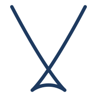

SWALLOWTAIL
About a third of data center electricity goes to cooling and power overhead.
Swallowtail is a world model on chips to plan their thermodynamics. By predicting how much heat a workload produces, we control how fast it should be run.
Intelligence does not need a better chip. It needs to learn the one it has.